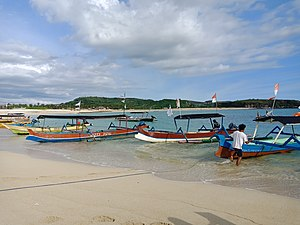

SEJARAH
sebuah pulau di kepulauan Sunda Kecil atau Nusa Tenggara yang
terpisahkan oleh Selat Lombok dari Bali di sebelah barat dan Selat Alas di
sebelah timur dari Sumbawa.
Pulau ini kurang lebih berbentuk bulat dengan semacam "ekor" di sisi
barat daya yang panjangnya kurang lebih 70 km. Luas pulau ini mencapai 5.435 km²
menempatkannya pada peringkat 108 dari daftar pulau berdasarkan luasnya di dunia.
Kota utama di pulau ini adalah Kota Mataram
Lombok termasuk provinsi Nusa Tenggara Barat dan pulau ini sendiri
dibagi menjadi 4 Kabupaten dan 1 Kota:
Kota Mataram
Kabupaten Lombok Barat
Kabupaten Lombok Tengah
Kabupaten Lombok Timur
Kabupaten Lombok Utara
Topografi pulau ini didominasi oleh gunung berapi Rinjani yang
ketinggiannya mencapai 3.726 meter di atas permukaan laut dan menjadikannya yang
ketiga tertinggi di Indonesia. Gunung ini terakhir meletus pada bulan Juni-Juli
1994. Pada tahun 1997 kawasan gunung dan danau Segara Anak ditengahnya dinyatakan
dilindungi oleh pemerintah. Daerah selatan pulau ini sebagian besar terdiri atas
tanah subur yang dimanfaatkan untuk pertanian, komoditas yang biasanya ditanam di
daerah ini antara lain jagung, padi, kopi, tembakau dan kapas.